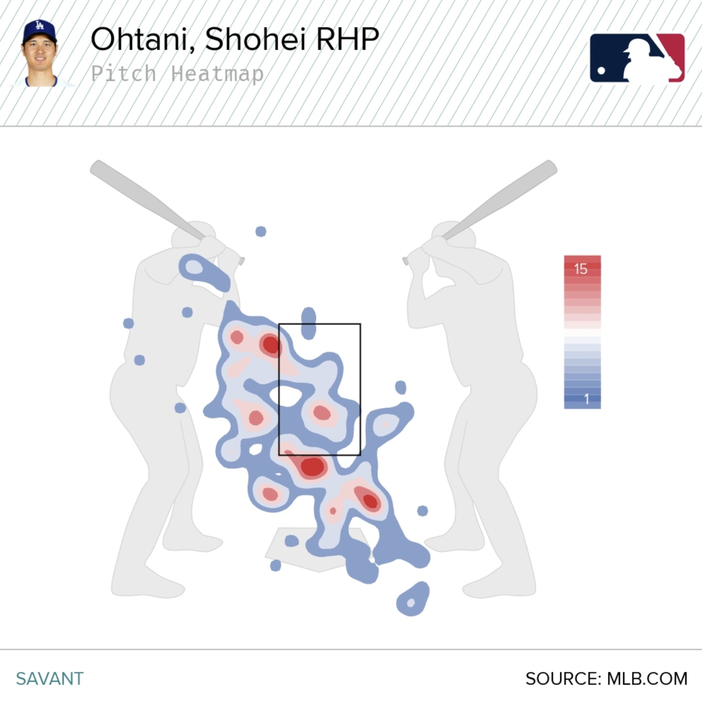
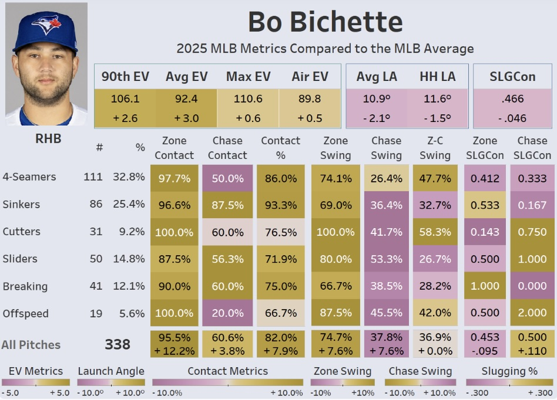

Sabermetrics
Overview
Sabermetrics
Health Metrics
AI Strategy
Modern Analytics in the Game
Intro paragraph w/ WAR, wOBA, xwOBA, xFIP, pitch tunneling, spray charts.

Heat map patterns for arsenal profiling.

Hitting patterns for arsenal profiling and expected outcomes.
Sources
[stat glossary source]
[analytics article]